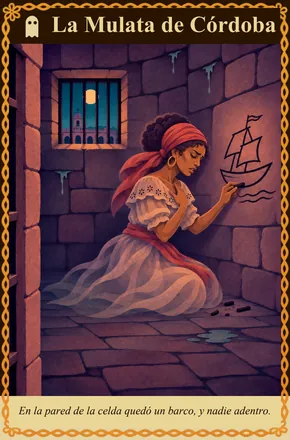
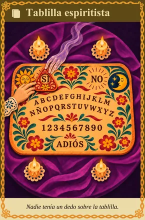
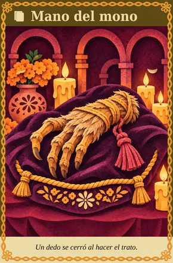

Historial de arte
Las fechas de aprobación corresponden al alcance documentado de cada pieza. Una identidad aprobada puede tener escenas todavía en revisión.
Novedades
- · Se actualizó el contraste del catálogo de iconos y la silueta de la huella de Marcas en el espejo. Ver cambio
- · El Vigía pasa a corrección de parecido.
- · Se registran las identidades ilustradas v03 de los roles.
- · Se aprueba la selección de cartas base.
También están documentados el arte sin marco de El Técnico con su asistente y la versión original de Manifestar. Sus registros carecen de fecha exacta.
Rediseños incorporados al mazo









Entregas históricas
Abre una colección para consultar sus piezas y su estado histórico.
Expansion Roles Arte v03 (8)
- curandero · Identidad histórica aprobada
- detective · Identidad histórica aprobada
- devota · Identidad histórica aprobada
- guardaespaldas · Identidad histórica aprobada
- improvisador · Identidad histórica aprobada
- sensitivo · Identidad histórica aprobada
- tecnico · Identidad histórica aprobada
- vigia · Identidad histórica aprobada
Expansion Testigos v01 (5)
- Estudio de personaje · Entrega histórica
- Estudio de personaje · Entrega histórica
- Estudio de personaje · Entrega histórica
- Estudio de personaje · Entrega histórica
- Estudio de personaje · Entrega histórica
Expansion Testigos v02 (12)
- Estudio de personaje · Entrega histórica
- Estudio de personaje · Entrega histórica
- amalia curandera · Entrega histórica
- Estudio de personaje · Entrega histórica
- fermin detective · Entrega histórica
- ines sensitiva · Entrega histórica
- Estudio de personaje · Entrega histórica
- Estudio de personaje · Entrega histórica
- mateo padre · Entrega histórica
- rafael tecnico · Entrega histórica
- Estudio de personaje · Entrega histórica
- tomas detective · Entrega histórica
sources (7)
- e05 · Entrega histórica
- e06 · Entrega histórica
- id20 · Entrega histórica
- o01 · Entrega histórica
- o02 · Entrega histórica
- o03 · Entrega histórica
- o05 · Entrega histórica
Noche de Animas Espiritu v10 (3)
- manifestar · Entrega histórica
- manifestar alternativa · Entrega histórica
- velar · Entrega histórica
Noche de Animas Roles v04 (13)
- curandero · Entrega histórica
- detective · Entrega histórica
- devota · Entrega histórica
- guardaespaldas · Entrega histórica
- improvisador · Entrega histórica
- manifestar · Entrega histórica
- reverso espiritu · Entrega histórica
- reverso roles · Entrega histórica
- reverso roles gris · Entrega histórica
- sensitivo · Entrega histórica
- tecnico · Entrega histórica
- velar · Entrega histórica
- vigia · Entrega histórica
Noche de Animas Roles v05 (13)
- curandero · Entrega histórica
- detective · Entrega histórica
- devota · Entrega histórica
- guardaespaldas · Entrega histórica
- improvisador · Entrega histórica
- manifestar · Entrega histórica
- reverso espiritu · Entrega histórica
- reverso roles · Entrega histórica
- reverso roles gris · Entrega histórica
- sensitivo · Entrega histórica
- tecnico · Entrega histórica
- velar · Entrega histórica
- vigia · Entrega histórica
Noche de Animas Roles v09 (16)
- curandero · Entrega histórica
- detective · Entrega histórica
- devota · Entrega histórica
- devota muerto · Entrega histórica
- guardaespaldas · Entrega histórica
- improvisador · Entrega histórica
- manifestar · Entrega histórica
- reverso espiritu · Entrega histórica
- reverso roles · Entrega histórica
- reverso roles gris · Entrega histórica
- sensitivo · Entrega histórica
- tecnico · Entrega histórica
- tecnico asistente fantasma · Entrega histórica
- tecnico muerto · Entrega histórica
- velar · Entrega histórica
- vigia · Entrega histórica